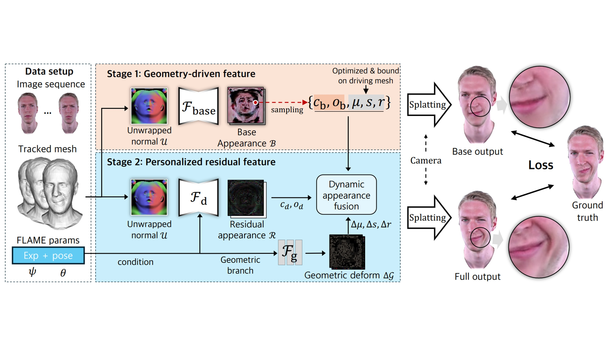
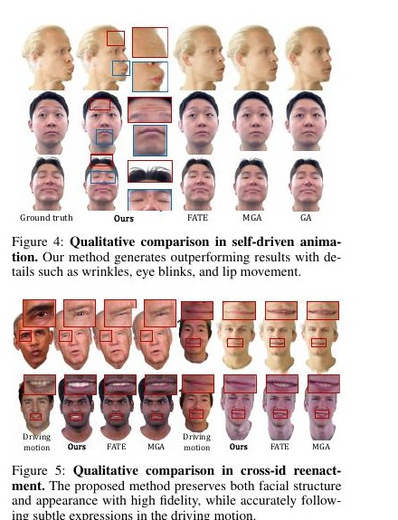
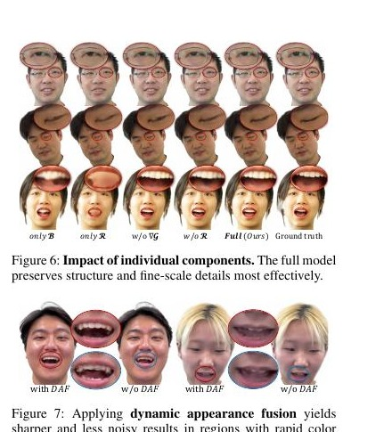
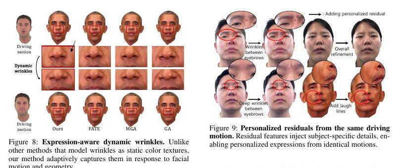

Abstract
Overview
Recent head-avatar methods can reproduce facial motion but often miss identity-specific details. DipGuava introduces a structured two-stage representation: the first stage learns a geometry-driven base appearance, and the second predicts personalized residuals such as wrinkles and subtle skin deformation. Dynamic appearance fusion integrates these residuals after geometric deformation, maintaining spatial and semantic alignment. The disentangled design produces photorealistic avatars with stronger identity preservation and expression fidelity than prior approaches.
01 · Figure
DipGuava separates stable geometry-driven appearance from personalized residual details, then fuses both after deformation to create expressive, identity-preserving 3D Gaussian head avatars from monocular video.

02 · Figure
Self-Driven and Cross-Identity Animation

03 · Figure
Disentangled Personalized Details

04 · Figure
Expression-Aware Dynamics

Citation
BibTeX
@inproceedings{lee2026dipguava,
title={{DipGuava}: Disentangling Personalized Gaussian Features for 3D Head Avatars from Monocular Video},
author={Lee, Jeonghaeng and Choi, Seok Keun and Li, Zhixuan and Lin, Weisi and Lee, Sanghoon},
booktitle={Proceedings of the AAAI Conference on Artificial Intelligence},
year={2026}
}